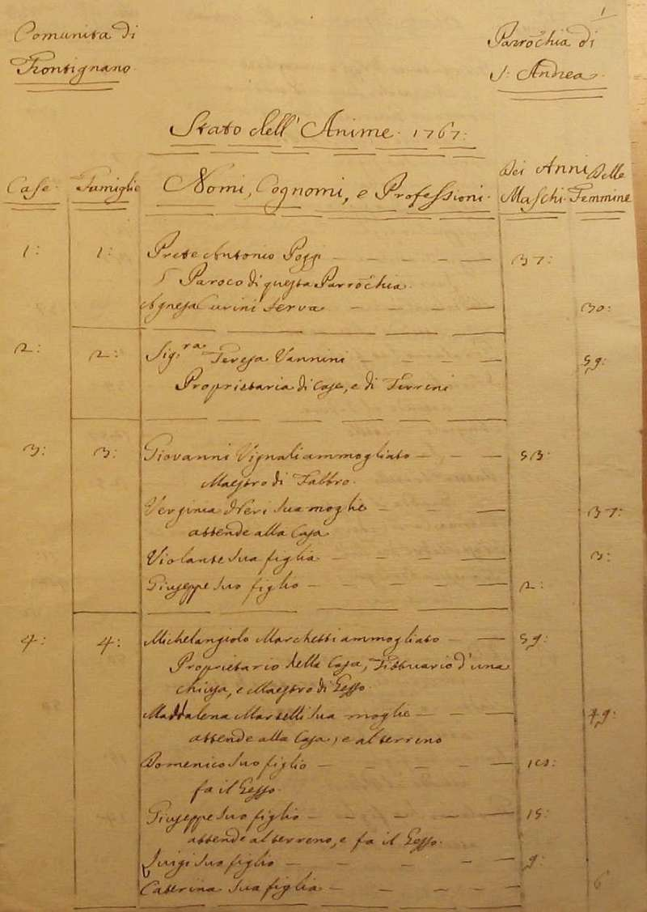
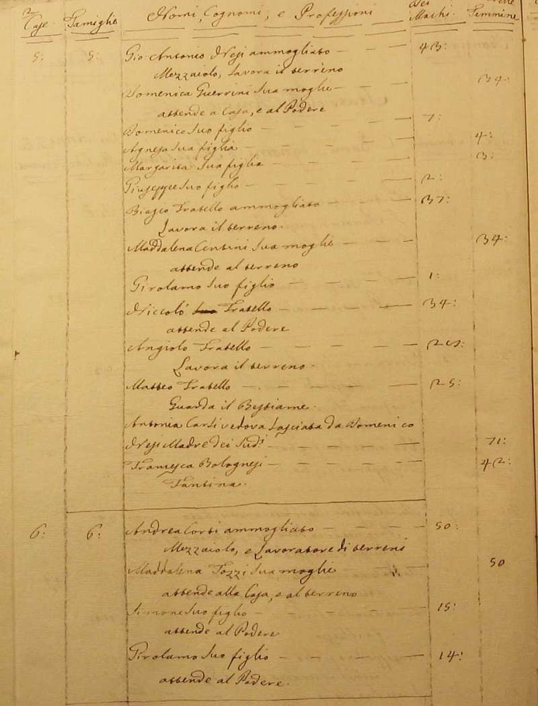
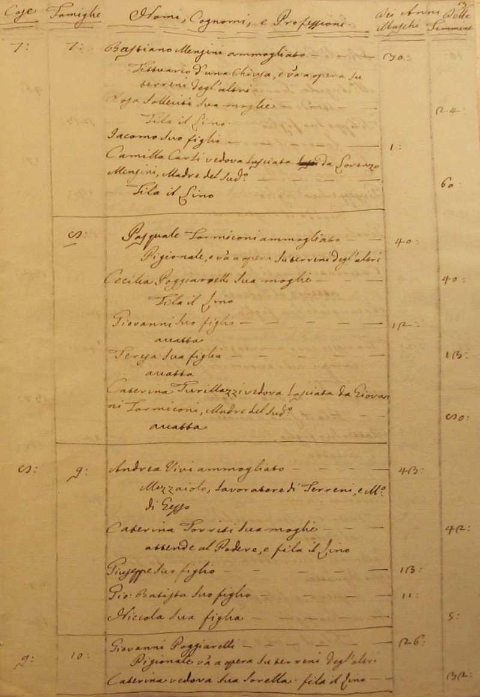
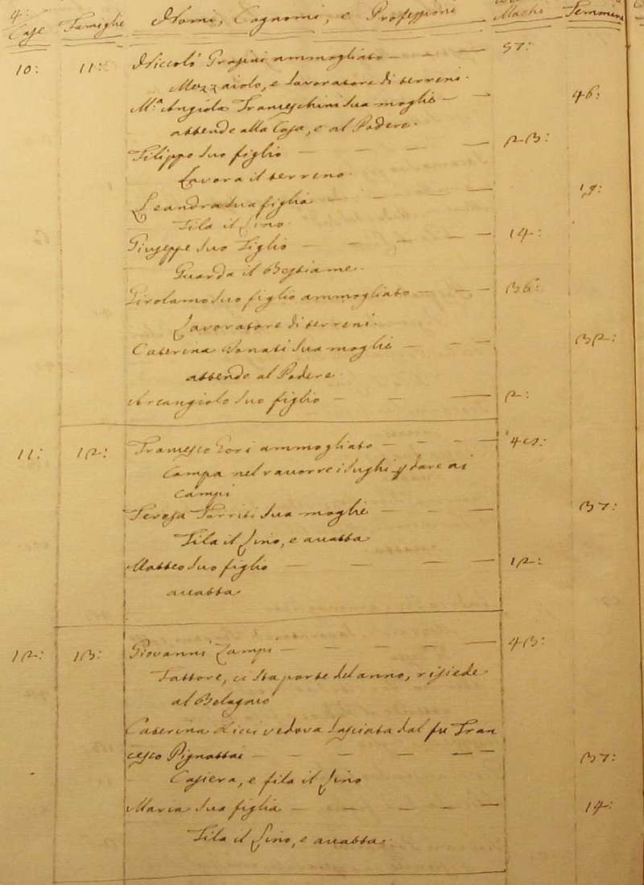
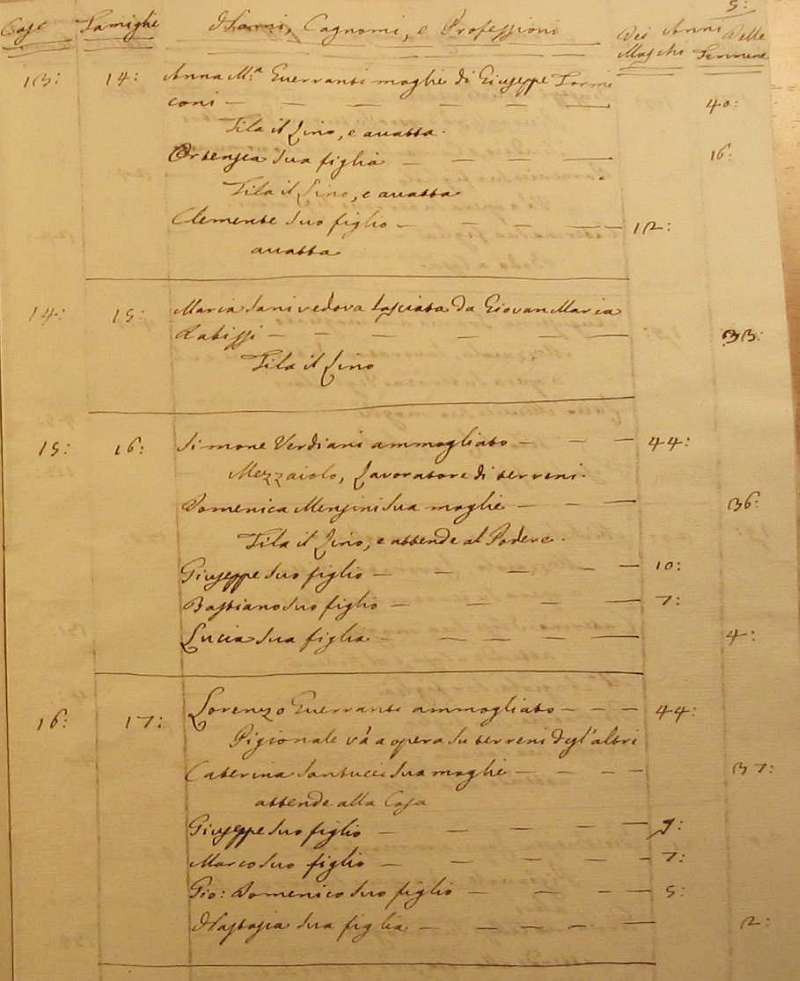
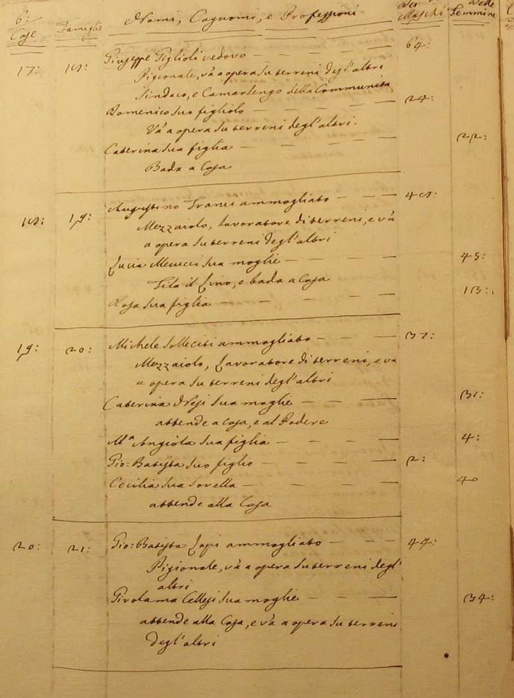
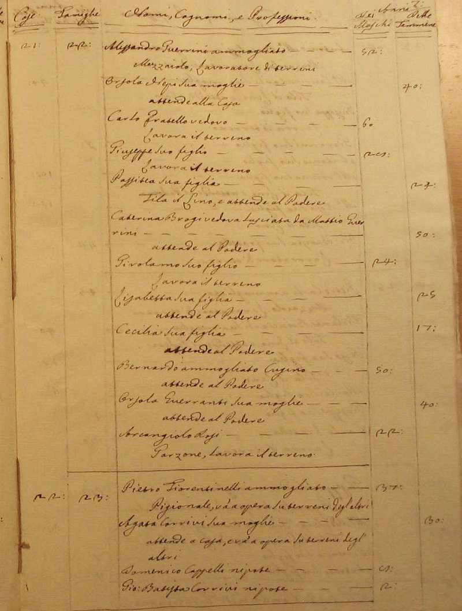
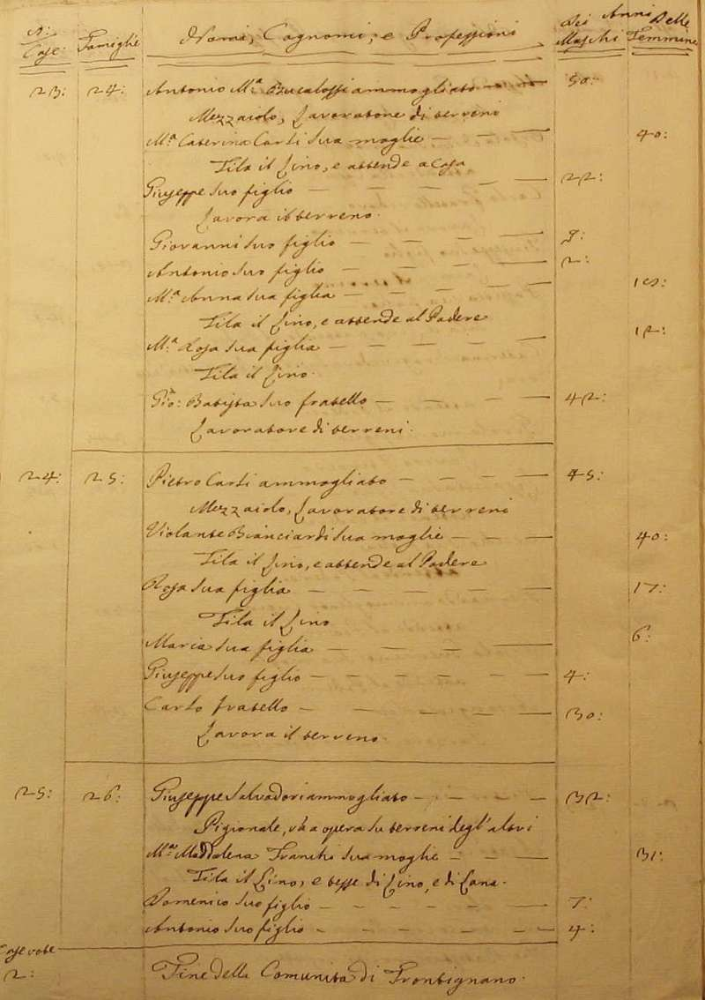
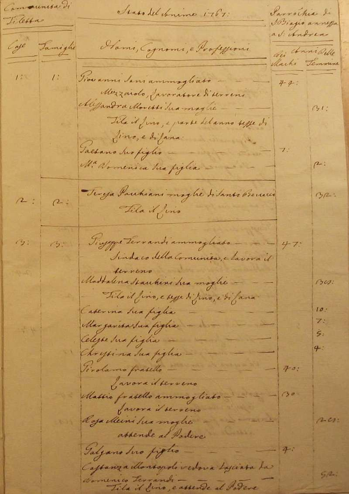
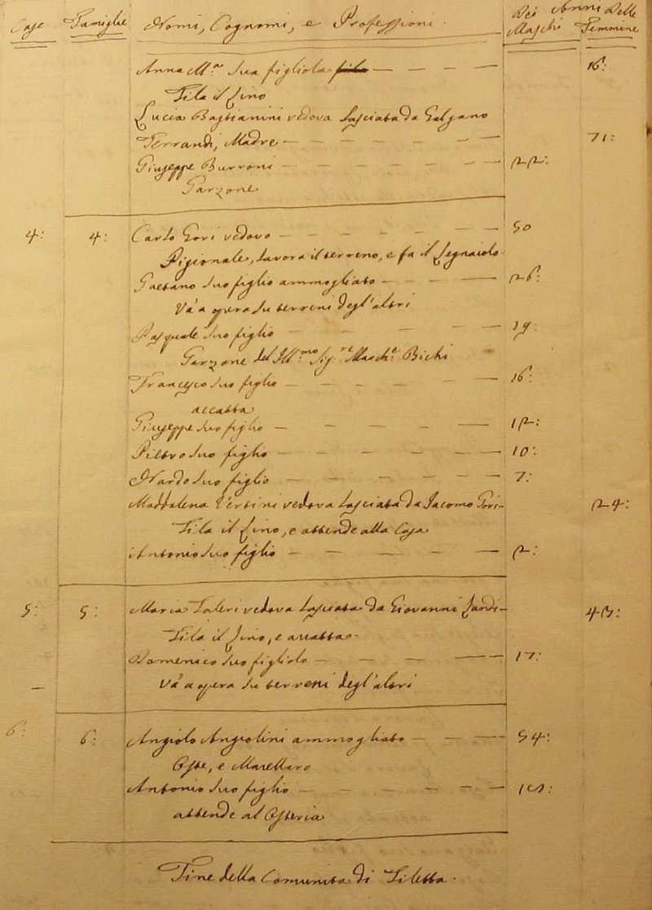

|
| Anno 1767 | |||
|
Ritorna all'indice delle parrocchie Il numero abbinato ad ogni famiglia indica la relativa posizione nello Stato delle Anime 1 - Prete Antonio Poggi - Paroco di questa Parrocchia 2 - Vannini Teresa - prorietaria di case e di terreni 3 - Vignali Giovanni - maestro di fabbro 4 - Marchetti Michelangiolo - proprietario della casa fittuario di una chiusa e maestro di gesso 5 - Nesi Giovanni Antonio - mezzaiolo lavora il terreno 6 - Corti Andrea - mezzaiolo e lavoratore di terreni 7 - Mensini Bastiano - fittuario d'una chiusa e va a opera su terreni degl'altri 8 - Formiconi Pasquale - pigionale e va a opera su terreni degl'altri 9 - Vivi Andrea - mezzaiolo lavoratore di terreni e maestro di gesso 10 - Poggiarelli Giovanni - pigionale va a opera su terreni degl'altri 11 - Grasini Niccolò - mezzaiolo e lavoratore di terreni 12 - Gori Francesco - campa nel raccorre i sughi per dare ai terreni - 3 13 - Zampi Giovanni - fattore ci sta parte dell'anno risiede la Bolagnio 14 - Formiconi Guerranti Anna Maria - moglie di Giuseppe Formiconi - fila il lino e accatta - 3 15 - Sani Maria - vedova lasciata da Giovan Maria Rabissi - 1 16 - Verdiani Simone - mezzaiolo lavoratore di terreni 17 - Guerranti Lorenzo - pigionale va a opera su terreni degl'altri 18 - Giglioli Giuseppe - pigionale va a opera su terreni degl'altri 19 - Franci Augustino - mezzaiolo lavoratore di terreni e va a opera su terreni degl'altri 20 - Solleciti Michele - mezzaiolo lavoratore di terreni e va a opera su terreni degl'altri 21 - Lapi Giovan Battista - pigionale va a opera su terreni degl'altri 22 - Guerrini Alessandro - mezzaiolo lavoratore di terreni 23 - Fiorentinelli Pietro - pigionale va a opera su terreni degl'altri 24 - Bucalossi Antonio Maria - mezzaiolo lavoratore di terreni 25 - Carli Pietro - mezzaiolo lavoratore di terreni 26 - Salvadori Giuseppe - pigionale va a opera su terreni degl'altri Comunità di Filetta 1 - Sani Giovanni - mezzaiolo lavoratore di terreni 2 - Pacchiani Teresa - moglie di Santi Bonucci - fila il lino - 1 3 - Ferrandi Giuseppe - sindaco della comunità e lavora il terreno - 14 4 - Gori Carlo - pigionale - lavora il terreno e fa il legnaiolo 5 - Faleri Maria - vedova lasciata da Giovanni Landi - fila il lino e accatta 6 - Angiolini Angiolo - oste e macellaro - 2           Ritorna all'indice delle parrocchie |